There was sad news awaiting us when we arrived at the hotel - a sewage leak prevented the beach area around the hotel from being used. We were told a shuttle would come get us very early in the morning to take us to a clean part of the beach. A group of us met this morning to do just this, and waited about 40 minutes before we finally figured out that there was no shuttle. Fortunately, the hotel had a pool full of Dead Sea water, so we at least got to experience floating in it.
Other things we did this day included: Masada / Ein Gedi / Qumran
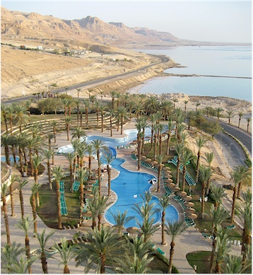
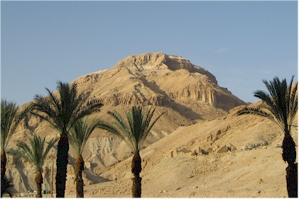
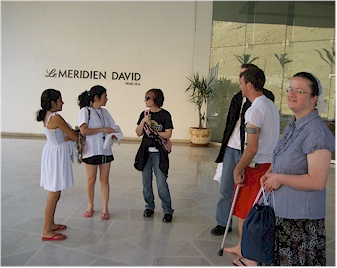
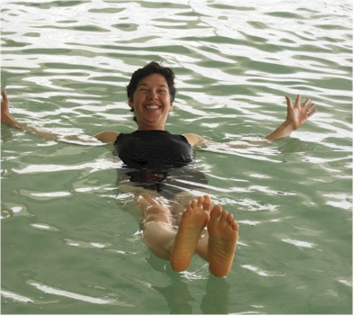
We had to be sure not to shave our legs the night before or else it would burn like fire.
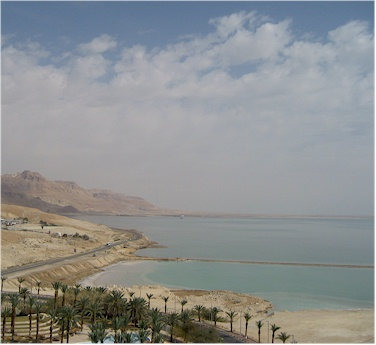
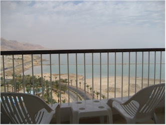
This shows our little balcony - very posh.
This southern half of the sea is now separated from the northern half at what used to be the Lisan Peninsula because of the fall of the level of Dead Sea.
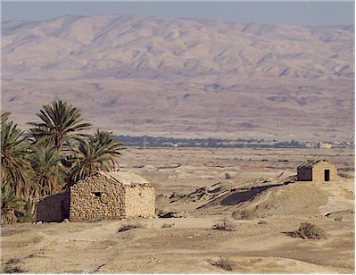
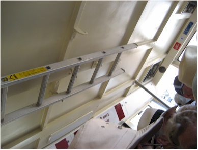
Eric was not pleased about riding a cable car, it's one of his things
that he has issues with. However, if you did the walk you would miss
part of the presentation, so we rode.
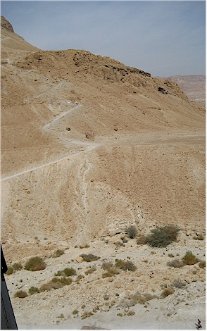
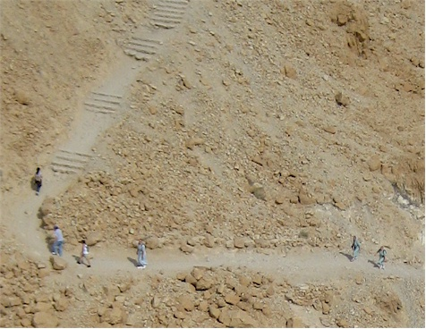
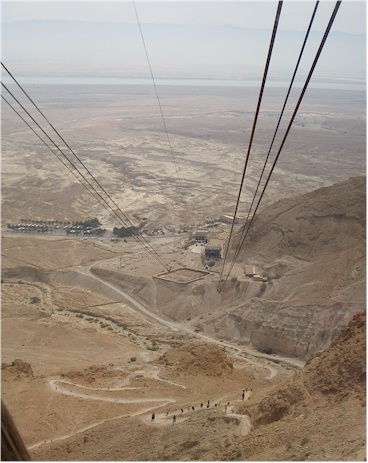
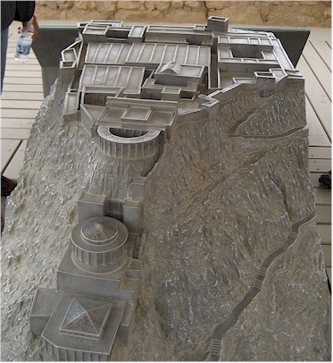
Herod the Great built the fortress of Masada between 37 and 31 B.C. Herod, the master builder, furnished Masada as a refuge for himself. It included a defensive wall around the plateau, storehouses, large cisterns, barracks, an ornate bath house, palaces, and an armory.
As I have mentioned previously, in 66 A.D., the Jews staged a rebellion against the Romans which is known as "The Great Revolt." It ended poorly for the Jewish people. After Rome destroyed Jerusalem and the Second Temple in 70 A.D., the Great Revolt ended - except for the surviving Zealots and their families who fled Jerusalem to Masada. You can see evidence of their occupation in the ways they modified some of Herod's buildings. In the large bath house you can clearly see where they converted Herod's Roman-style fancy baths into a practical place to wash up by adding a tub and benches.
According to Josephus (the northern Jewish commander turned Roman historian I mentioned previously), Masada was the last rebel stronghold in Judea. In 73 or 74 A.D., the Roman Tenth Legion, led by Flavius Silva, laid siege to the mountain. The legion consisted of 8,000 troops. They built eight base camps around the base and a wall around the perimeter of their camps and began to lay siege to Masada. The Romans then began to construct a giant ramp of rock and earth against the western approach to Masada. We are told they used Jewish slaves to do the work because the Zealots would not drop rocks on them to kill them as they would if Romans were working there. In the spring of the year 74 A.D., the Romans moved a battering ram up the rampart and breached the wall of Masada.
We were told the breach occurred at nightfall, so the Romans decided to wait until first light to attack the inhabitants of the fortress. As Josephus describes it, when the hope of the rebels dwindled, the leader gave a speech in which he convinced the community that it would be better to take their own lives rather than live in shame and humiliation as Roman slaves. A portion of this speech reads, "Since we, long ago, my generous friends, resolved never to be servants to the Romans, nor to any other than to God himself, who alone is the true and just Lord of mankind, the time is now come that obliges us to make that resolution true in practice...Let our wives die before they are abused, and our children before they have tasted slavery."
About the night of suicide, Josephus writes: Then, having chosen by lot ten of their number to dispatch the rest, they laid themselves down each beside his prostrate wife and children and, flinging their arms around them, offered their throats in readiness for the executants of the melancholy office. These, having unswervingly slaughtered all, ordained the same rule of the lot for one another, that he on whom it fell should slay first the nine and then himself last of all; such mutual confidence had they all that neither in acting nor in suffering would one differ from another.
We are told the only survivors are two women and five children who were
found hiding in the cisterns. They told the Romans what happened that
night, the 15th of Nissan, the first day of Passover. Masada today is
one of the Jewish people's greatest symbols. Israeli soldiers take an oath
there: "Masada shall not fall again." Our guide said a line
that really struck me, "We Israelis do not have the privilege of losing
even a single war."
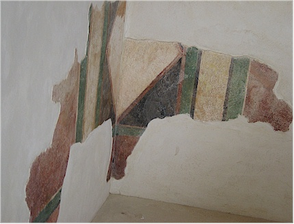
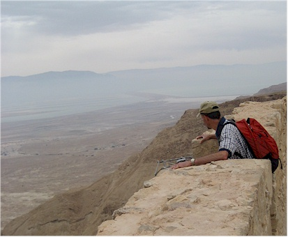
it was once painted in many bright colors.
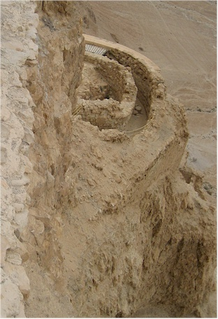
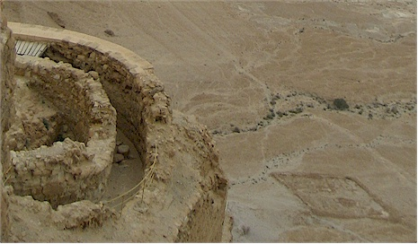
Two views of the remains of the Northern Palace in the picture on the right you can see one of the Roman encampment locations down below.
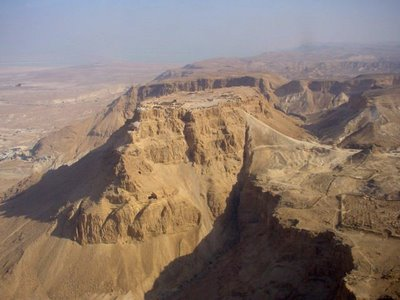
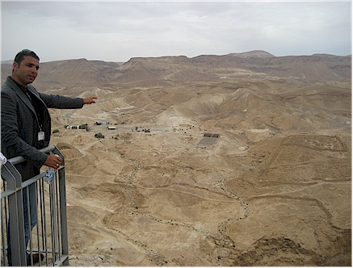
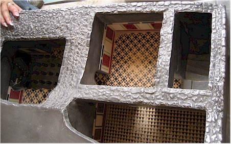
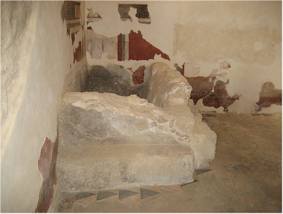
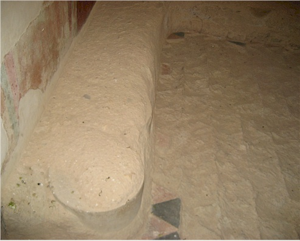
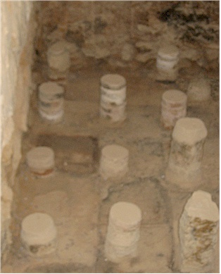
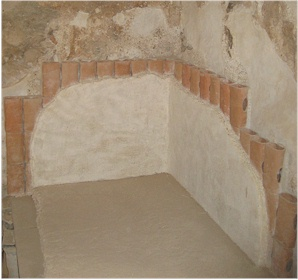
I read that the temperature of the room could get about 120 degrees - which would feel awesome in Rome, but can't be all that helpful in this part of Israel where the air temperature also often approaches this level. I think it was just a case of Herod wanting all the trappings so he could "impress the Giordanos."
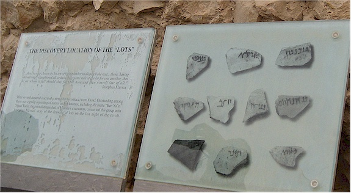
This shows a picture of the lots that the executioners used
to determine
who had to kill themselves at the location where they were found..
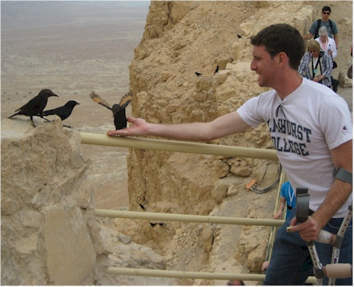
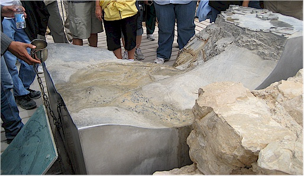
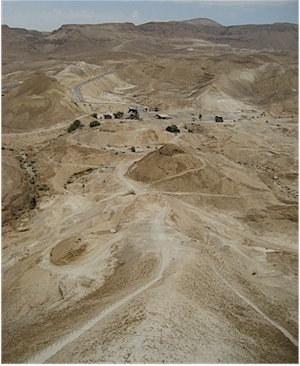
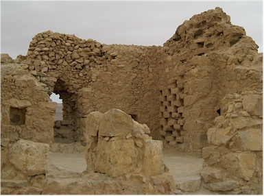
for food and their poop was used for fertilizer. You can't be wasting
stuff when you live on top of a mountain in a desert!
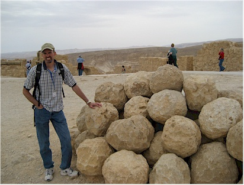
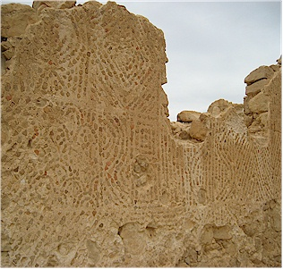
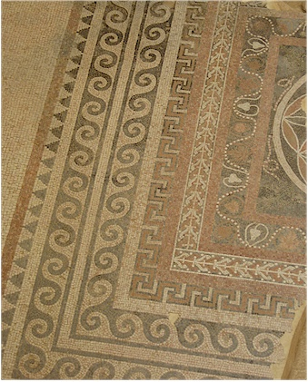
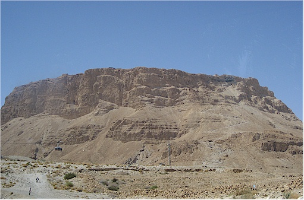
the view the Roman soldiers had.
Ein Gedi means "spring of the young goats." Several springs provide plentiful water to support a luxuriant mix of tropical and desert vegetation. The site is mentioned in the Bible for its beauty in the Song of Solomon 1:14 and as a refuge for David when he was fleeing King Saul, 1 Samuel 24:1.
Pastor Ken started with a review of 1 Samuel 16, which relates the choosing of David as the next king to succeed Saul. God sent Samuel to Jesse and asked to see all of his sons. Jesse called everyone in except David, the youngest. I guess Jesse didn't think the next king could possibly be little old David so he didn't even give him the chance. Thus Jesse made seven of his sons pass before Samuel. And Samuel said to Jesse, �The LORD has not chosen these.� And Samuel said to Jesse, �Are all the young men here?� Then he said, �There remains yet the youngest, and there he is, keeping the sheep.� And Samuel said to Jesse, �Send and bring him. For we will not sit down till he comes here.� So he sent and brought him in. Now he was ruddy, with bright eyes, and good-looking. And the LORD said, �Arise, anoint him; for this is the one!� 1 Samuel 16:10-12
David went on to befriend Saul and his sons. Later Saul went a bit nutty and wanted to kill David. Although he had opportunities to kill Saul and take over the kingdom, David did not do this. He knew if he made himself king then he would have to continually work to keep himself there. However, if he allowed God to place him in that role, then God would keep him there for as long as He wanted David to reign. In this, David demonstrated a trust in God that we should try to emulate.
We also learned about types of sorrow we can feel over bad actions. Worldly sorrow includes:
- Remorse - I'm sorry because of how it makes me feel
- Regret - I'm sorry that I got caught
- Resolve - I resolve to put all my effort into avoiding this in the future
None of these are Godly sorrow. Godly sorrow leads to repentance - which is basically apologizing to God and asking Him to help us improve.
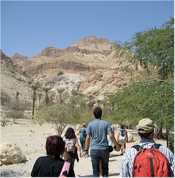
It was a bit hot and dry.
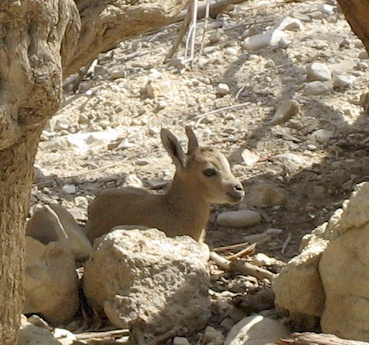
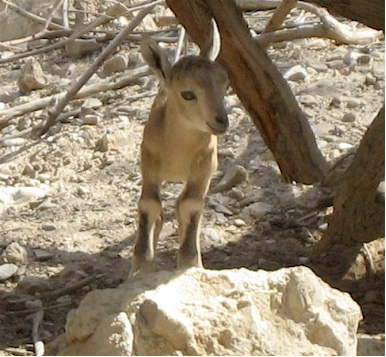
To our great joy, our teaching spot was located next
to the hang out
of a baby Ibex, born only the day before (according to a park official
who was supervising the little tyke.) Poor Pastor Ken had to teach
his lesson while being upstaged by this little sweetheart.
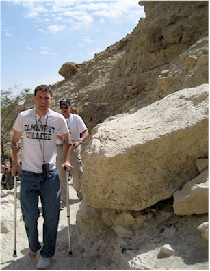
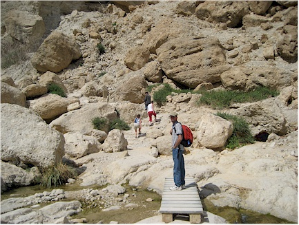
Chris has some really nice blisters going by now.
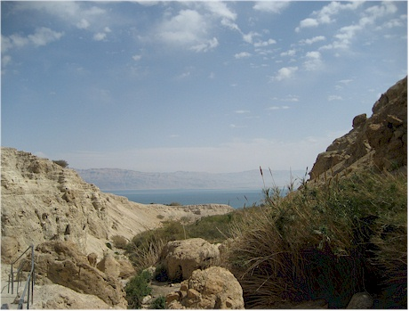
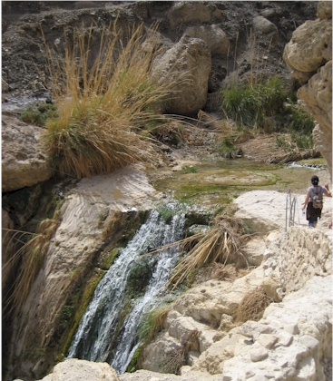
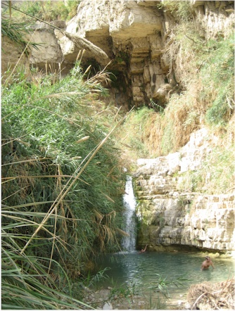

pretty bad decision on their part.
you are at a beautiful waterfall - it was cool & lush
all around it. This is called Shulamit Falls.
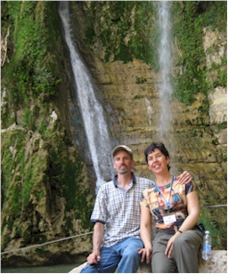
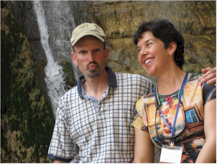
like I'm falling over and Eric looks kind of sinister.
more to life than being really, really, ridiculously good looking.
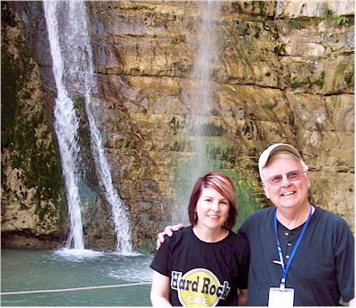
They were a lot of fun to hang out with.
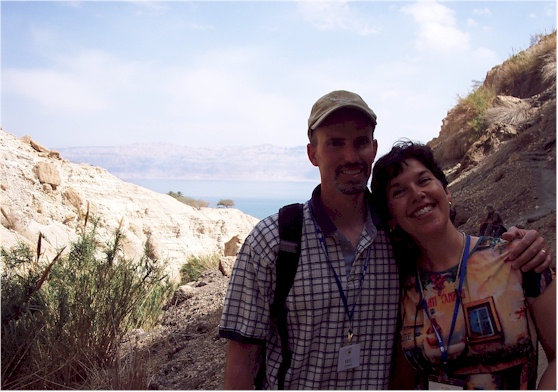
Piper took this picture for us - I think it is the best one
taken of us on the whole trip.
Thanks Piper!
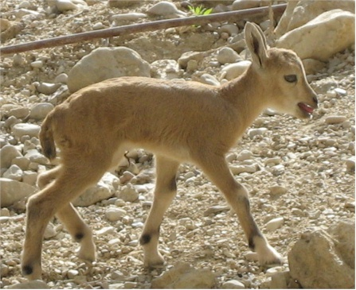
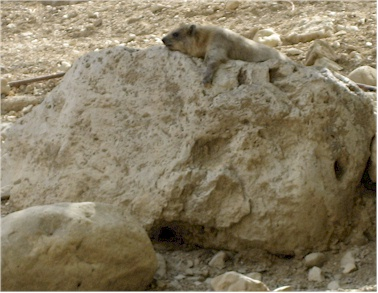
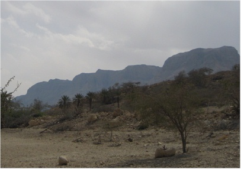
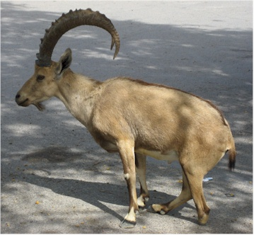
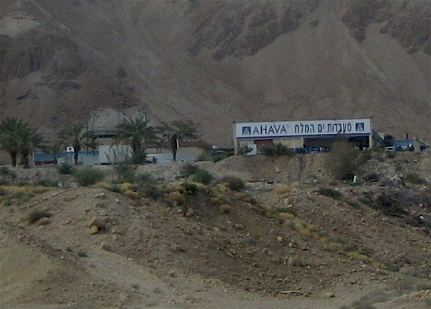
NOTE: Amir wants us all to know it is pronounced "Ah-hav- AH"
From Ein Gedi we went to Qumran - which is where we went shopping yesterday.
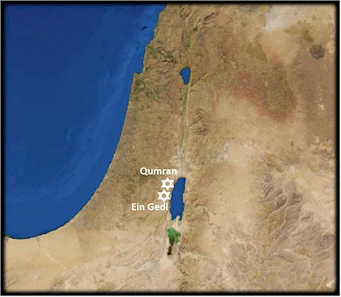
The discovery of the scrolls began in 1947 when an Arab shepherd boy missed one of his goats. While searching for it in one of the many steep valleys, he threw a stone into a hillside cave and heard what sounded like breaking pottery. Inside the cave was found pottery jars 25 to 29 inches high and about 10 inches wide. In these, leather scrolls were found wrapped in squares of linen cloth, which were covered over with a pitch-like substance.
The shepherds initially tried to sell the scrolls to an antique dealer in Bethlehem. However, he directed them to Jerusalem where several were sold to a Syrian archbishop and others to a professor of archeology at Hebrew University. In total more than 500 different manuscripts were discovered. About one-third are books of the Old Testament; the balance are commentaries on the Old Testament books, Apocryphal and wisdom books, hymns, psalms, and liturgies.
The scrolls those Bedouin boys removed from that dark cave that day would come to be recognized as the greatest manuscript treasure ever found�the first seven manuscripts of the Dead Sea Scrolls.
These manuscripts are a thousand years older than the then-oldest-known Hebrew texts of the Bible, many of which were written more than 100 years before the birth of Jesus. These manuscripts sent excitement through the archaeological world and provided a team of translators with a gigantic task that even to this day has not been completed.
could be mistaken on that. There were so many caves in the area!
Geo-head picture of the folds in this rock bed.
those sheep living on? I didn't see any vegetation!
I think.
walking around with a machine gun, and a Haredi Jew -
which is a conservative form of Orthodox Judaism.